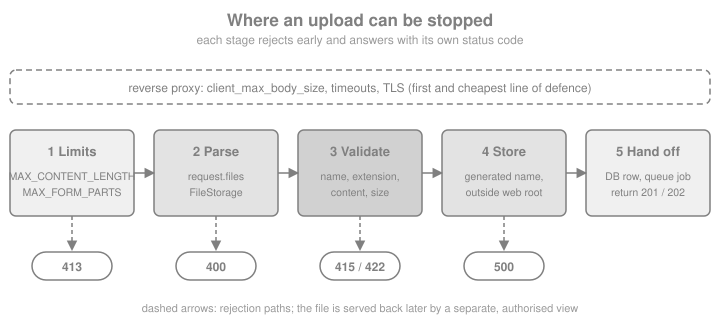

File Uploads
|
This content was generated with the assistance of AI and should be verified against the official documentation before being relied on in production. |
This page is written against Flask 3.1.3 (released 2026-02-18), Werkzeug 3.1.9 (released 2026-09-27) and Flask-WTF 1.3.0,
checked on 2026-10-07. Flask 3.2 and Werkzeug 3.2 were not released on that date, so nothing here depends on them. The code
uses Python 3.10+ syntax and every Python block was executed on Python 3.13 with app.test_client(); the blocks that use
Pillow 12.3.0 and boto3 1.43 were executed with those packages installed, and nothing talks to a real network. A file upload
is the one place where a web application lets a stranger choose bytes, a name and a size that it will keep on disk, so most
of this page is about what not to believe. The running scenario is the Bookshelf catalogue that the other pages of this
section build on: books get a cover image, and a book can also carry a few scanned pages.
The Life of an Upload
An upload is an ordinary POST whose body is encoded as multipart/form-data: one part per form field, and each file part
carries a field name, a client-chosen file name, a client-claimed content type and the bytes. Werkzeug parses it lazily
the first time the view touches request.files or request.form, puts the text fields into request.form and the file
parts into request.files, and hands each file over as a werkzeug.datastructures.FileStorage. Parts of up to about 500 KB
are kept in memory; bigger ones spill to a temporary file on disk (the stream factory is a SpooledTemporaryFile), so a
large upload does not have to fit in RAM, but it does fill the temporary directory. The details of request.files, of the
FileStorage attributes and of the three body limits are on the Request Data page;
this page picks up where parsing ends.
A safe upload handler is a pipeline in which every stage can refuse the request:

The same stages, as a checklist for the view that you write:
-
Limit the size of the whole request before any byte is parsed (
MAX_CONTENT_LENGTH, the reverse proxy). -
Check that the field and the file are present, because a browser sends an empty part when no file is chosen.
-
Never use the client’s file name as a path. Generate your own name, or sanitise theirs with
secure_filename(). -
Check the extension against an allow-list, then check the content, because the extension and the declared content type are both claims by the client.
-
Write the bytes outside the web root and outside any directory the web server executes or serves directly.
-
Record the file in the database, hand slow work to a queue and answer with
201or202. -
Serve the file back through a view that checks authorisation, with a safe content type.
The Smallest Working Upload
The official documentation builds the pattern in five steps: mark the form with enctype="multipart/form-data", read the
file from request.files, test that it has a name, sanitise the name with secure_filename() and call save(). Without
the enctype attribute the browser sends the file name as an ordinary text field and request.files stays empty, which is
the most common reason for the question "why is my upload `None`".
import tempfile
from pathlib import Path
from flask import Flask, abort, redirect, render_template_string, request, url_for
from werkzeug.utils import secure_filename
app = Flask(__name__)
# A real application keeps this under app.instance_path; the examples use a throw-away folder.
app.config["UPLOAD_FOLDER"] = Path(tempfile.mkdtemp(prefix="bookshelf-uploads-"))
FORM = """
<form method="post" enctype="multipart/form-data">
<input type="file" name="cover" accept="image/png,image/jpeg">
<button>Upload</button>
</form>
"""
@app.route("/basic/<int:book_id>", methods=["GET", "POST"])
def basic_upload(book_id: int):
if request.method == "POST":
cover = request.files.get("cover") # a missing field is None, not a KeyError
if cover is None or cover.filename == "":
abort(400, description="choose a cover image")
name = secure_filename(cover.filename)
cover.save(app.config["UPLOAD_FOLDER"] / name)
return redirect(url_for("basic_upload", book_id=book_id))
return render_template_string(FORM)
client = app.test_client()
page = client.get("/basic/1").get_data(as_text=True)
print('enctype="multipart/form-data"' in page)
from io import BytesIO
ok = client.post("/basic/1", data={"cover": (BytesIO(b"\x89PNG..."), "dune.png")})
print(ok.status_code, sorted(p.name for p in app.config["UPLOAD_FOLDER"].iterdir()))
print(client.post("/basic/1", data={"cover": (BytesIO(b""), "")}).status_code)
print(client.post("/basic/1", data={"title": "no file part"}).status_code)Source: Flask: Uploading Files
Two details of that example matter. request.files.get("cover") is used instead of request.files["cover"] because a
missing key in a Werkzeug multi-value mapping raises BadRequestKeyError, which becomes a 400 with a generic message;
using get() lets the view give a useful message. And the check is on filename == "" rather than on the truthiness of the
FileStorage object, because an empty file part with a name is a different (and legitimate) situation from "no file chosen".
File Names: secure_filename and Generated Names
werkzeug.utils.secure_filename() turns an arbitrary string into something that is safe to pass to os.path.join(): it
normalises Unicode to ASCII, replaces path separators and whitespace with underscores, keeps only letters, digits and
._-, and strips leading and trailing dots and underscores. It looks only at the string. It does not check that the file
exists, that the directory is a symbolic link or that the name is unique, and it can return an empty string when nothing
usable is left, which the caller must handle.
from werkzeug.utils import secure_filename
for claimed in ["../../etc/passwd", "Dune cover.PNG", "Électrique.png", ".htaccess", " ", "shell.php.png"]:
print(f"{claimed!r:22} -> {secure_filename(claimed)!r}")Source: Werkzeug: secure_filename
The table shows what to take from that output:
| Claimed name | What happens and what to do |
|---|---|
|
Becomes |
|
Becomes |
|
Becomes |
A name made only of unusable characters |
Becomes |
|
Unchanged. |
Two things follow. First, on Windows a reserved device name such as CON gets an underscore prefix, so the output is
platform-dependent. Second, and more important, a sanitised client name is still an attacker-chosen name: two users can
upload cover.png, and one overwrites the other. The robust design is to store under a name you generate (a UUID or a
content hash plus the allow-listed extension), and to keep the original name only as metadata in the database, where it is
shown to people after being escaped like any other user text.
Validating the Content
An allow-list of extensions stops honest mistakes and the cheapest attacks; it proves nothing about the bytes. The declared
mimetype is just as unverified. Real validation looks at the content. For images the cheapest checks are the magic
bytes at the start of the file, and the strongest is to open the file with an image library and make it decode. The
following helper module-level code is reused by the examples of the rest of the page. It validates the extension, sniffs
the signature, copies the stream in chunks with a hard byte limit, and writes to a temporary file in the destination folder
before renaming it, so that a half-written file is never visible under its final name.
import os
import secrets
import uuid
from pathlib import Path
from werkzeug.datastructures import FileStorage
from werkzeug.exceptions import RequestEntityTooLarge, UnsupportedMediaType
SIGNATURES = {
".png": (b"\x89PNG\r\n\x1a\n",),
".jpg": (b"\xff\xd8\xff",),
".jpeg": (b"\xff\xd8\xff",),
}
MAX_COVER_BYTES = 2 * 1024 * 1024
def clean_extension(filename: str) -> str:
safe = secure_filename(filename)
suffix = Path(safe).suffix.lower()
if suffix not in SIGNATURES:
raise UnsupportedMediaType(f"allowed extensions: {', '.join(sorted(SIGNATURES))}")
return suffix
def check_signature(stream, suffix: str) -> None:
head = stream.read(16)
stream.seek(0)
if not any(head.startswith(sig) for sig in SIGNATURES[suffix]):
raise UnsupportedMediaType("the file content does not match its extension")
def store(upload: FileStorage, folder: Path, suffix: str, max_bytes: int) -> str:
"""Copy the upload to a generated name in folder; refuse more than max_bytes."""
name = f"{uuid.uuid4().hex}{suffix}"
tmp = folder / f".{name}.part"
written = 0
try:
with open(tmp, "wb") as out:
while chunk := upload.stream.read(64 * 1024):
written += len(chunk)
if written > max_bytes:
raise RequestEntityTooLarge(f"a cover may not exceed {max_bytes} bytes")
out.write(chunk)
os.replace(tmp, folder / name) # atomic on the same file system
finally:
tmp.unlink(missing_ok=True)
return name
def new_app(**config) -> Flask:
"""A fresh application per example: routes cannot be added after the first request."""
flask_app = Flask(__name__)
flask_app.config.update(UPLOAD_FOLDER=Path(tempfile.mkdtemp(prefix="bookshelf-")), **config)
return flask_app
png = b"\x89PNG\r\n\x1a\n" + b"0" * 1000
folder = Path(tempfile.mkdtemp(prefix="bookshelf-validate-"))
print(store(FileStorage(BytesIO(png), "x.png"), folder, ".png", MAX_COVER_BYTES)[-4:])
try:
store(FileStorage(BytesIO(png * 4000)), folder, ".png", MAX_COVER_BYTES)
except RequestEntityTooLarge as exc:
print("too large:", exc.code, [p.name for p in folder.iterdir() if p.name.endswith(".part")])
try:
check_signature(BytesIO(b"<html>alert(1)</html>"), ".png")
except UnsupportedMediaType as exc:
print("rejected:", exc.code, exc.description)Source: Flask: Uploading Files
Four notes on that code. The signature check reads the first bytes and rewinds, which works because the stream of a
FileStorage is seekable. The size is counted while copying because FileStorage.content_length is the length the part
declared in its own header, which browsers leave at 0, and so cannot be used for quotas. Path(...).suffix is taken from the
sanitised name, and only the allow-listed suffix is ever used in the stored name. Finally, exceptions such as
UnsupportedMediaType (415) and RequestEntityTooLarge (413) are normal Werkzeug HTTP exceptions, so Flask turns them into
responses through the same error handlers as abort() (see Error Handling).
A signature check is a filter, not a proof: an attacker can prepend a valid PNG signature to anything. When the file is supposed to be an image, decoding it is the real test, and that belongs in the processing step described in Handing the Image Over for Processing.
Size Limits and 413
Three configuration keys bound what Flask will read, and they are described in the "Limits on Request Size" section of the
Request Data page. For uploads the one that matters is MAX_CONTENT_LENGTH: when the
body is larger, accessing request.files, request.form or request.get_data() raises
werkzeug.exceptions.RequestEntityTooLarge, which Flask answers with 413. Since Flask 3.1 the limit can also be set for
one request by assigning request.max_content_length, as long as it happens before the body is read. That allows a
small global limit and a larger one only on the upload route.
| Setting | Default | Role for uploads |
|---|---|---|
|
|
Total body bytes. Set it for any application that accepts bodies from the Internet. The official documentation gives 16 megabytes as its example value. |
|
|
Number of fields plus files in a multipart body. A body of thousands of tiny parts is a CPU and memory attack that the byte
limit does not stop. Werkzeug 3.1.9 does not apply it to |
|
|
Largest non-file field in a multipart body. File parts are meant to be exempt and spill to disk, but see the note below the
table: a small global value can still reject a file part. It is not applied to |
|
none (your own key) |
Not a Flask setting: the official upload example only uses this name by convention for the destination directory. Keep it in the configuration so tests can point it at a temporary folder. |
Both form limits are therefore multipart-only in Werkzeug 3.1.9; urlencoded bodies are bounded by MAX_CONTENT_LENGTH alone,
as the Security Considerations page also explains. Do not lower
MAX_FORM_MEMORY_SIZE globally on an application that accepts uploads. Werkzeug’s multipart parser reads the body in chunks
of up to 64 KiB and checks each chunk against the limit, so in the tests for this page a global MAX_FORM_MEMORY_SIZE of
16 KiB rejected a 20 KB file part with 413. Leave the default (or a generous value) globally and keep the strict bound on
the routes that accept only text, or raise request.max_form_memory_size on the upload route as that page shows. The example
below keeps MAX_FORM_MEMORY_SIZE at its default and limits the size per route with request.max_content_length instead.
from flask import jsonify
from werkzeug.exceptions import RequestEntityTooLarge
app = new_app(MAX_CONTENT_LENGTH=16 * 1000 * 1000, MAX_FORM_PARTS=20) # the global ceiling: 16 MB
@app.errorhandler(RequestEntityTooLarge)
def too_large(error):
return jsonify(error="upload too large", limit=request.max_content_length), 413
@app.post("/limits/cover")
def limited_cover():
request.max_content_length = 1024 # this route accepts only 1 KB; set before touching the body
request.files.get("cover") # parsing happens here and raises 413 when exceeded
return jsonify(ok=True)
client = app.test_client()
resp = client.post("/limits/cover", data={"cover": (BytesIO(b"x" * 5000), "big.png")})
print(resp.status_code, resp.get_json())
print(client.post("/limits/cover", data={"cover": (BytesIO(b"x" * 100), "ok.png")}).status_code)
many = {f"f{i}": "x" for i in range(50)}
print(client.post("/limits/cover", data=many, content_type="multipart/form-data").status_code) # over MAX_FORM_PARTSSource: Flask: Uploading Files
Three pitfalls come with limits:
-
With the development server you may get a connection reset instead of a
413when a large upload is refused, because the server closes the socket while the browser is still sending. The official documentation says the correct status appears with a production WSGI server. It is a testing artefact, not a bug in the handler. -
A limit inside Flask is the second line of defence. The first is the reverse proxy in front of the application (nginx has
client_max_body_size, for instance), because it refuses oversized bodies before a Python worker is tied up and it can also apply request and body timeouts against slow clients. See the Introduction and Architecture page for the deployment stack. -
The limit applies to the whole body, so with several files it is a total. A per-file cap needs the counting loop shown in the previous section.
Storing the Files
Where the bytes go decides who can reach them.
| Destination | Consequences |
|---|---|
Inside |
The web server serves the file as-is, with a content type guessed from the extension, with no authorisation and possibly with execution. Never do this for user content. |
A folder outside the project that only the application writes (the instance folder, |
The standard choice for a single server. Reachable only through a view you write, so every download can check who is asking. Needs a shared volume when several servers or containers run the application. |
A database |
Transactional with the metadata and simple to back up, but heavy for large files, and it loads bytes through the database connection. Reasonable for small avatars. |
Object storage (S3, Google Cloud Storage, Azure Blob) |
Scales, survives the application server and can be served through a CDN. The upload can pass through Flask or go directly from the browser (see Uploading to S3 and Object Storage). |
For the filesystem option the application’s instance folder (app.instance_path) is the place Flask provides for files that
belong to one deployment and not to the code, as covered on the Configuration page.
# norun: configuration snippet for an application factory
import os
from pathlib import Path
from flask import Flask
def create_app() -> Flask:
app = Flask(__name__, instance_relative_config=True)
upload_dir = Path(os.environ.get("BOOKSHELF_UPLOADS", app.instance_path)) / "uploads"
upload_dir.mkdir(parents=True, exist_ok=True)
app.config["UPLOAD_FOLDER"] = upload_dir
app.config["MAX_CONTENT_LENGTH"] = 8 * 1024 * 1024
return appA few operational points complete the picture. Keep the uploads directory writable only by the application user and not executable. Spread many files across sub-directories (for example the first two characters of the generated name) because a single directory with millions of entries is slow. Back the folder up with the database, because the database rows reference files that must exist. And clean up: a file that was saved but whose database row failed to commit is an orphan, so write the file first under a temporary name, commit the row and then rename, or delete the file in the error path.
The Bookshelf Cover Endpoint
The pieces now fit together in one endpoint that accepts a cover, stores it under a generated name, records it and serves it
back. The download view uses send_from_directory(), the function made for this: it joins an untrusted relative path to a
trusted directory with werkzeug.security.safe_join() and answers 404 when the result escapes the directory or is not a
regular file. The parameters are directory and path.
from flask import send_from_directory
app = new_app(MAX_CONTENT_LENGTH=16 * 1000 * 1000)
COVERS: dict[int, dict] = {} # stands in for a database table
@app.post("/books/<int:book_id>/cover")
def upload_cover(book_id: int):
cover = request.files.get("cover")
if cover is None or not cover.filename:
abort(400, description="choose a cover image")
suffix = clean_extension(cover.filename)
check_signature(cover.stream, suffix)
name = store(cover, app.config["UPLOAD_FOLDER"], suffix, MAX_COVER_BYTES)
COVERS[book_id] = {"file": name, "original_name": cover.filename, "claimed_type": cover.mimetype}
return jsonify(book=book_id, cover=url_for("cover_file", name=name)), 201
@app.get("/covers/<name>")
def cover_file(name: str):
# In a real application: look the name up, check that the current user may see this book.
response = send_from_directory(app.config["UPLOAD_FOLDER"], name)
response.headers["X-Content-Type-Options"] = "nosniff"
return response
client = app.test_client()
good = client.post("/books/7/cover", data={"cover": (BytesIO(png), "../../Dune cover.PNG", "image/png")})
print(good.status_code, good.get_json())
stored = good.get_json()["cover"]
print(client.get(stored).status_code, client.get(stored).mimetype, client.get(stored).headers["X-Content-Type-Options"])
print(client.get("/covers/..%2F..%2Fetc%2Fpasswd").status_code, client.get("/covers/missing.png").status_code)
print(client.post("/books/7/cover", data={"cover": (BytesIO(b"<script>"), "x.png")}).status_code)
print(client.post("/books/7/cover", data={"cover": (BytesIO(png), "x.exe")}).status_code)
print(COVERS[7]["original_name"])Source: Flask API: send_from_directory
Source: Werkzeug: safe_join
The returned content type of send_from_directory() is guessed from the stored file name, which is why the stored name
carries only the validated extension. The nosniff header tells browsers not to second-guess it, one of the headers
that the security page of this section collects. The original_name column is metadata only: it is shown to
users after normal template escaping and never used to build a path.
Serving Files Back
send_from_directory(directory, path, **kwargs) forwards its keyword arguments to flask.send_file(), which holds the
options that matter for downloads.
| Option | Effect |
|---|---|
|
Sends |
|
The file name offered to the browser. Use the stored original name here (the library encodes it safely), while the file
on disk keeps its generated name. Replaces |
|
Overrides the guess. Set it explicitly for formats you control instead of trusting what was claimed at upload. |
|
The defaults: the response supports |
|
Seconds for |
|
Overrides the file’s modification time for conditional requests. |
app = new_app()
COVERS = {7: {"file": store(FileStorage(BytesIO(png)), app.config["UPLOAD_FOLDER"], ".png", MAX_COVER_BYTES),
"original_name": "Dune cover.PNG"}}
@app.get("/books/<int:book_id>/cover/download")
def download_cover(book_id: int):
record = COVERS.get(book_id) or abort(404)
return send_from_directory(
app.config["UPLOAD_FOLDER"],
record["file"],
as_attachment=True,
download_name=secure_filename(record["original_name"]) or "cover",
max_age=3600,
)
client = app.test_client()
first = client.get("/books/7/cover/download")
print(first.status_code, first.headers["Content-Disposition"], first.headers["Cache-Control"])
again = client.get("/books/7/cover/download", headers={"If-None-Match": first.headers["ETag"]})
print(again.status_code)
partial = client.get("/books/7/cover/download", headers={"Range": "bytes=0-3"})
print(partial.status_code, partial.headers["Content-Range"])Source: Flask API: send_file
When a front-end server such as nginx or Apache sits in front of Flask it can send the file itself, which frees the Python
worker during a large download. Flask exposes the USE_X_SENDFILE configuration key (default False); when it is enabled
the response carries an X-Sendfile header instead of the body, for servers that understand that convention. Other servers
use their own internal-redirect header, set by the view, and the file location must be one that only the server can reach. If
the files are served by the proxy or by object storage directly, register the endpoint with
app.add_url_rule("/covers/<name>", endpoint="cover_file", build_only=True) so that url_for("cover_file", name=...) still
builds the URL while no Flask view exists, which is the pattern the official page shows for download_file.
Never serve user-supplied HTML, SVG or JavaScript from your application’s own origin with an inline disposition: the script
runs with the origin’s cookies. Either force as_attachment=True, or serve user content from a separate domain that holds no
session.
Several Files and Several Fields
A field that carries more than one file (<input type="file" name="pages" multiple>) shows up as several values under one
key. request.files.get("pages") returns the first, and request.files.getlist("pages") returns all of them as a list, in
the order sent. Each one needs the same validation as a single file, and the request-level limits apply to the sum.
app = new_app()
@app.post("/books/<int:book_id>/pages")
def upload_pages(book_id: int):
files = [f for f in request.files.getlist("pages") if f.filename]
if not 1 <= len(files) <= 5:
abort(400, description="send between 1 and 5 pages")
stored_names = []
for page in files:
suffix = clean_extension(page.filename)
check_signature(page.stream, suffix)
stored_names.append(store(page, app.config["UPLOAD_FOLDER"], suffix, MAX_COVER_BYTES))
return jsonify(book=book_id, pages=len(stored_names)), 201
client = app.test_client()
resp = client.post("/books/7/pages", data={"pages": [(BytesIO(png), "p1.png"), (BytesIO(png), "p2.png")]})
print(resp.status_code, resp.get_json())
print(client.post("/books/7/pages", data={"pages": []}).status_code)Source: Werkzeug: MultiDict.getlist
If a batch must be all-or-nothing, collect the generated names, and delete the ones already written when a later file is rejected; the handler above leaves earlier pages on disk when a later page is refused, which is the kind of orphan to clean up.
Flask-WTF File Fields
Writing the checks by hand is fine for an API endpoint. For an HTML form, Flask-WTF 1.3.0 provides Werkzeug-aware fields
and validators in flask_wtf.file, and the form object also handles CSRF. The Flask-WTF page of this section covers
forms in general; the file-specific pieces are these.
| Name | Behaviour |
|---|---|
|
A WTForms file field that sets |
|
The same for several files; |
|
Validator that fails when no real file was sent. Use it instead of |
|
Validator that checks only the extension, from a list such as |
|
Validator for the size in bytes. It needs a seekable stream, which a normal uploaded part is, and it rewinds the stream afterwards. |
A FlaskForm fills request.files and request.form together by default, so no manual merging is needed, but the HTML
<form> still needs enctype="multipart/form-data". The form validates, and the view then runs the same content check and
storage code as before.
from flask_wtf import FlaskForm
from flask_wtf.file import FileAllowed, FileField, FileRequired, FileSize
from wtforms import StringField
from wtforms.validators import InputRequired
class CoverForm(FlaskForm):
caption = StringField("Caption", validators=[InputRequired()])
cover = FileField(
"Cover",
validators=[
FileRequired(),
FileAllowed(["png", "jpg", "jpeg"], "Images only"),
FileSize(max_size=MAX_COVER_BYTES),
],
)
# The key comes from the environment (or is generated for this demo); it is never written in the source.
app = new_app(SECRET_KEY=os.environ.get("SECRET_KEY") or secrets.token_hex(32), WTF_CSRF_ENABLED=False)
# WTF_CSRF_ENABLED = False is only for this demonstration; leave CSRF protection on in production.
@app.route("/books/<int:book_id>/cover-form", methods=["GET", "POST"])
def cover_form(book_id: int):
form = CoverForm()
if form.validate_on_submit():
suffix = clean_extension(form.cover.data.filename)
check_signature(form.cover.data.stream, suffix)
name = store(form.cover.data, app.config["UPLOAD_FOLDER"], suffix, MAX_COVER_BYTES)
return jsonify(book=book_id, caption=form.caption.data, cover=name), 201
return jsonify(errors=form.errors), 400
client = app.test_client()
good = client.post("/books/7/cover-form", data={"caption": "First edition", "cover": (BytesIO(png), "a.png")})
print(good.status_code, good.get_json()["caption"])
print(client.post("/books/7/cover-form", data={"caption": "x", "cover": (BytesIO(png), "a.gif")}).get_json())
print(client.post("/books/7/cover-form", data={"caption": "x"}).get_json())Source: Flask-WTF: File Uploads
Source: Flask-WTF API: flask_wtf.file
The Flask-WTF documentation root redirects to the 1.2.x pages, so the links point there even though 1.3.0 is the current
release; the file validators described above are the ones shipped in the 1.3.0 source. The cookbook-style recipe of
FileField, FileRequired and secure_filename is therefore still valid in outline: what changed is that
secure_filename is imported from werkzeug.utils, and that FileAllowed and FileSize now replace most hand-written
checks. A long-standing mistake is to treat FileAllowed as content validation: it compares the end of the file name only.
CSRF and Uploads from JavaScript
A form that uploads a file is a state-changing POST, so it needs CSRF protection like any other. FlaskForm includes a
hidden token and validates it, which is why the WTF_CSRF_ENABLED = False line above must never reach production. For
uploads sent by fetch() or XMLHttpRequest, with FormData as the body, the page that renders them cannot rely on a form
field: flask_wtf.csrf.CSRFProtect(app) checks every unsafe request, and accepts the token from the X-CSRFToken (or
X-CSRF-Token) header as well as from a form field named csrf_token. The page puts csrf_token() in a <meta> tag
or a data attribute, and the script copies it into the header. Do not set the Content-Type header yourself in
fetch(): the browser adds the multipart boundary only when it builds the header from the FormData.
from flask_wtf.csrf import CSRFProtect, generate_csrf
from flask import Flask
csrf_app = Flask(__name__)
csrf_app.config.update(SECRET_KEY=secrets.token_hex(32), UPLOAD_FOLDER=app.config["UPLOAD_FOLDER"])
CSRFProtect(csrf_app)
@csrf_app.get("/token")
def token():
return {"csrf_token": generate_csrf()}
@csrf_app.post("/ajax-cover")
def ajax_cover():
cover = request.files["cover"]
suffix = clean_extension(cover.filename)
check_signature(cover.stream, suffix)
return {"stored": store(cover, csrf_app.config["UPLOAD_FOLDER"], suffix, MAX_COVER_BYTES)}, 201
c = csrf_app.test_client()
body = {"cover": (BytesIO(png), "ajax.png")}
print(c.post("/ajax-cover", data=body).status_code) # no token
tok = c.get("/token").get_json()["csrf_token"]
print(c.post("/ajax-cover", data={"cover": (BytesIO(png), "ajax.png")}, headers={"X-CSRFToken": tok}).status_code)Source: Flask-WTF: CSRF Protection
Handing the Image Over for Processing
A cover is rarely shown as uploaded: it is re-encoded, resized into thumbnails and stripped of metadata. That work takes tens of milliseconds to seconds, so the request should only store the original, record a job and answer. The reference architecture for the queue, the workers, retries and status polling is on the Upload Pipelines, Queues and Jobs page, the Python libraries (Pillow among them) on Python Image and Video Libraries, and thumbnails and responsive sizes on Responsive Images and Thumbnails. The background-job tools for Flask (Celery and its alternatives) belong to the Background Jobs, Celery & Email page of this section.
The processing step is also where the strongest validation happens: opening the file with Pillow and decoding it. Pillow
has a built-in guard against decompression bombs, a small file that expands to a huge bitmap: Image.MAX_IMAGE_PIXELS (about
89 million pixels by default) raises Image.DecompressionBombError at twice that size. Set a limit that suits your
application. ImageOps.exif_transpose() applies the camera rotation before the metadata is dropped.
import queue
from PIL import Image, ImageOps
app = new_app()
COVERS = {}
jobs: "queue.Queue[tuple[int, str]]" = queue.Queue() # stands in for Celery, RQ or a cloud queue
Image.MAX_IMAGE_PIXELS = 24_000_000
def make_thumbnail(folder: Path, name: str, size=(256, 256)) -> str:
source = folder / name
with Image.open(source) as probe:
probe.verify() # structural check; the file must be reopened afterwards
with Image.open(source) as image:
image = ImageOps.exif_transpose(image).convert("RGB")
image.thumbnail(size)
target = f"{Path(name).stem}-thumb.jpg"
image.save(folder / target, "JPEG", quality=85) # re-encoding drops the metadata too
return target
@app.post("/books/<int:book_id>/cover/async")
def upload_cover_async(book_id: int):
cover = request.files.get("cover") or abort(400)
suffix = clean_extension(cover.filename)
check_signature(cover.stream, suffix)
name = store(cover, app.config["UPLOAD_FOLDER"], suffix, MAX_COVER_BYTES)
jobs.put((book_id, name))
return jsonify(book=book_id, status="processing"), 202 # the client polls or gets a webhook
def run_worker_once():
book_id, name = jobs.get_nowait()
try:
COVERS[book_id] = {"file": name, "thumbnail": make_thumbnail(app.config["UPLOAD_FOLDER"], name)}
except Exception as exc: # a real worker records the failure and quarantines the file
COVERS[book_id] = {"file": name, "error": type(exc).__name__}
client = app.test_client()
real = BytesIO()
Image.new("RGB", (800, 1200), "navy").save(real, "PNG")
print(client.post("/books/9/cover/async", data={"cover": (BytesIO(real.getvalue()), "dune.png")}).status_code)
run_worker_once()
print(COVERS[9])
fake = b"\x89PNG\r\n\x1a\n" + b"not really an image"
client.post("/books/10/cover/async", data={"cover": (BytesIO(fake), "fake.png")})
run_worker_once()
print(COVERS[10]["error"])Source: Pillow: Image Module
The second upload in the example passes the signature check and is only caught by decoding, which is the point of doing both. A real worker would also delete or quarantine the rejected file and mark the book’s cover as failed.
Uploading to S3 and Object Storage
The Flask Cookbook ends its deployment chapter with S3 uploads through boto3, and the idea is still right: files that must outlive the server, be shared by several instances or be served through a CDN belong in object storage. There are two ways to get a file there.
Through Flask. The view validates the upload as above and streams it to the bucket with the boto3 client method
upload_fileobj(Fileobj, Bucket, Key, ExtraArgs=None, Callback=None, Config=None). The application pays the bandwidth twice,
and the request holds a worker for the whole transfer, but all validation stays in one place.
Directly from the browser with a presigned URL. The application only signs a short-lived permission and the browser
talks to the bucket. Flask stays out of the data path, so the upload does not tie up a worker or count against
MAX_CONTENT_LENGTH. Because the application cannot see the bytes, limits and types must be written into the signature, and
verification happens afterwards.
Presigned POST is the better fit for browser uploads because its signed policy can carry conditions, a size range and a
content type prefix, which the storage service enforces. A presigned PUT URL (generate_presigned_url("put_object", ...))
can pin the Content-Type but cannot bound the size. Credentials are never written in code: boto3 reads them from the
environment, a shared credentials file or, best of all, the role of the machine or container it runs on. Both boto3
calls below need no network, because signing is local computation.
import boto3
from botocore.config import Config
app = new_app()
ALLOWED_TYPES = {"image/png": ".png", "image/jpeg": ".jpg"}
def s3_client():
# Credentials and region come from the environment or the runtime role, never from the source code.
return boto3.client("s3", config=Config(signature_version="s3v4"))
@app.post("/uploads/presign")
def presign():
payload = request.get_json(silent=True) or {}
content_type = payload.get("content_type")
if content_type not in ALLOWED_TYPES:
abort(415, description="only PNG and JPEG covers")
key = f"covers/{uuid.uuid4().hex}{ALLOWED_TYPES[content_type]}" # the key is chosen by the server
post = s3_client().generate_presigned_post(
Bucket="bookshelf-media",
Key=key,
Fields={"Content-Type": content_type},
Conditions=[
{"Content-Type": content_type},
["content-length-range", 1, MAX_COVER_BYTES],
],
ExpiresIn=300,
)
return jsonify(key=key, **post)
client = app.test_client()
resp = client.post("/uploads/presign", json={"content_type": "image/png"})
data = resp.get_json()
print(resp.status_code, data["url"], sorted(data["fields"]))
print(client.post("/uploads/presign", json={"content_type": "text/html"}).status_code)
put_url = s3_client().generate_presigned_url(
"put_object", Params={"Bucket": "bookshelf-media", "Key": "covers/x.png", "ContentType": "image/png"}, ExpiresIn=300
)
print(put_url.split("?")[0], "X-Amz-Signature" in put_url)Source: boto3: Generating presigned URLs
Source: boto3: generate_presigned_post
The server-side variant is shown with a fake client, which is also how to test code that depends on object storage without a
network: inject the client, and pass a unittest.mock.Mock in tests.
from unittest.mock import Mock
class S3Storage:
"""Streams validated uploads to a bucket; the client is injected so tests can fake it."""
def __init__(self, client, bucket: str):
self.client, self.bucket = client, bucket
def save(self, upload: FileStorage, suffix: str, content_type: str) -> str:
key = f"covers/{uuid.uuid4().hex}{suffix}"
self.client.upload_fileobj(upload.stream, self.bucket, key, ExtraArgs={"ContentType": content_type})
return key
fake_client = Mock()
storage = S3Storage(fake_client, "bookshelf-media")
saved = storage.save(FileStorage(BytesIO(png), "c.png"), ".png", "image/png")
print(saved.startswith("covers/"), fake_client.upload_fileobj.call_args.kwargs)Source: boto3: upload_fileobj
Rules for object storage that the old recipes break:
-
The bucket must stay private and the object must not be made public with a
public-readACL. Since April 2023 new S3 buckets have ACLs disabled and public access blocked by default, so the ACL recipes in older books fail outright. Serve files through short-lived signed download URLs or a CDN configured with origin access control. -
The browser upload needs a CORS rule on the bucket that allows your site’s origin; the Flask application’s own CORS settings are irrelevant, as the request never reaches Flask. The general mechanism is on the CORS page.
-
After a direct upload, treat the key as unverified. The
confirmstep reads the object’s metadata (head_object) and a processing job re-validates the content, exactly as for a local file. -
Use a lifecycle rule to delete incomplete or never-confirmed uploads, and keep the original name only as metadata.
Testing Uploads
Flask’s test client builds the multipart body for you. Pass a dictionary as data; a value that is a tuple of
(file_object, filename) or (file_object, filename, content_type) becomes a file part, and a plain value becomes a
text field. A list of tuples under one key sends several files under the same name. The test client sets
the content type to multipart when it sees file objects; pass content_type="multipart/form-data" to be explicit. Test
the paths that fail as carefully as the one that succeeds: no file, an empty file name, a wrong extension, a mismatched
signature, an oversized body, a traversal in the download URL. Point UPLOAD_FOLDER at the test runner’s temporary directory
so no test leaves files behind.
def make_test_app(tmp_path: Path) -> Flask:
test_app = Flask(__name__)
test_app.config.update(TESTING=True, UPLOAD_FOLDER=tmp_path, MAX_CONTENT_LENGTH=4096)
@test_app.post("/cover")
def cover():
upload = request.files.get("cover")
if upload is None or not upload.filename:
abort(400)
suffix = clean_extension(upload.filename)
return {"stored": store(upload, test_app.config["UPLOAD_FOLDER"], suffix, MAX_COVER_BYTES)}, 201
return test_app
def test_uploads(tmp_path: Path):
c = make_test_app(tmp_path).test_client()
ok = c.post("/cover", data={"cover": (BytesIO(png[:100]), "a.png", "image/png")}, content_type="multipart/form-data")
assert ok.status_code == 201 and (tmp_path / ok.get_json()["stored"]).exists()
assert c.post("/cover", data={}).status_code == 400
assert c.post("/cover", data={"cover": (BytesIO(b"x"), "a.exe")}).status_code == 415
assert c.post("/cover", data={"cover": (BytesIO(b"x" * 9000), "a.png")}).status_code == 413
assert len(list(tmp_path.iterdir())) == 1 # only the good upload left a file
test_uploads(Path(tempfile.mkdtemp(prefix="bookshelf-test-")))
print("upload tests passed")Source: Flask: Testing, Form Data
Security Checklist
| Risk | Defence |
|---|---|
Path traversal through the file name |
Never build a path from |
Overwriting or guessing other users' files |
Generated, unguessable names, plus an ownership check in the download view. Names alone are not authorisation. |
Stored XSS through uploaded HTML, SVG or scripts |
Allow-list extensions, serve with |
Wrong content under a good extension |
Check signatures, then decode the file in the processing step. Re-encode images so that polyglot payloads and metadata (GPS positions in EXIF) are discarded. |
Decompression bombs and huge images |
Limit pixels ( |
Resource exhaustion |
|
Malware |
A scan step (for example ClamAV) before a file is made available to others, when users share files. |
CSRF on the upload endpoint |
|
Leaking the server structure |
Do not return absolute paths or internal exception text in error responses; return your own generated identifier. |
Execution of uploaded files |
Mount the folder as non-executable, keep it outside any directory served as code and never |
The OWASP File Upload Cheat Sheet is the reference list of these controls, and the Request Data page explains why every attribute of the incoming file is untrusted input. The generic web-security guidance of the official documentation covers the headers that complement them.
Recent Changes and Where Older Material Is Outdated
| Change | Version | Consequence for upload code |
|---|---|---|
|
Flask 3.1 |
One route can have its own ceiling. Setting it must happen before the body is read. |
|
Flask 3.1 |
Cheap protection against multipart bodies with thousands of parts. Older code and books know only |
|
Flask 2.0 (old names removed in 2.2) |
Code in older tutorials and in the Flask 1.x examples of the Cookbook raises |
|
Removed in Werkzeug 1.0 |
Import |
|
Flask-WTF 1.2.0 |
Multi-file forms no longer need a custom field. |
ACLs disabled and public access blocked on new S3 buckets |
AWS, April 2023 |
|
The books that this section consults need the following updates on this page’s topic. The recipe in chapter 5 of Flask
Framework Cookbook (a FileField with FileRequired, an extension check, then secure_filename() and save()) is still
the right outline, and its three weak points today are that the sanitised client name becomes the stored name and is
saved to the database (two users uploading cover.png overwrite each other, so generate the name), that the extension is
the only check (add the signature and the decode check), and that nothing limits the size (MAX_CONTENT_LENGTH). In the
2nd edition the import is from werkzeug import secure_filename, which stopped working in Werkzeug 1.0; use
werkzeug.utils. The S3 recipe in chapter 11 keeps the access key and secret key in the application configuration, creates
the bucket from inside a view, passes the uploaded object straight to upload_fileobj and marks it with the
public-read ACL. Today the keys come from the environment or, better, from the role of the machine or container,
bucket creation is infrastructure rather than request code, new buckets reject ACLs, and the browser can upload directly
with a presigned POST. Neither edition covers the multipart limits and the per-request ceiling added in Flask 3.1.
Common Pitfalls
-
request.filesis empty: the form lacksenctype="multipart/form-data", or the field name differs from the one the view reads, or the request is JSON, which cannot carry a file. -
Using
request.files["cover"]and getting an opaque400. Useget(). -
Trusting
file.content_type,file.mimetypeorfile.content_length; all three are claims by the client. -
Calling
secure_filename()and then not testing for an empty result. -
Reading
request.get_data()orrequest.streamfirst and then asking forrequest.files: the body is consumed once. -
Saving into
static/, which makes uploads public and executable by whatever serves static files. -
Relying on
MAX_CONTENT_LENGTHalone with a development server and misreading the connection reset as a bug. -
Reading a whole upload with
read()into memory to measure it, which defeats the spooling to disk. -
Forgetting that the file pointer is at the end after a check: rewind with
seek(0)before saving or processing. -
Letting a failed batch leave files on disk with no database row.
-
Using a debugger-enabled development server for uploads that the public can reach.